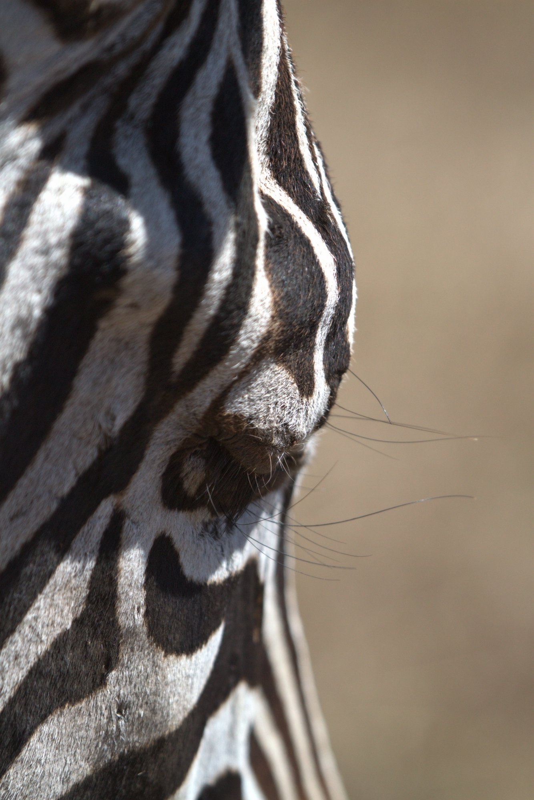

Zebra Vision
A zebra’s face, up close: velvet nose, long whiskers, bold stripes. Its eyes sit high on the sides of its head. How far round can it see without turning?

How many degrees, out of 360, can a zebra see?
Drag either needle to open or close the shaded fan, or use the arrow keys. The shaded part is how much of the circle you think a zebra can see without turning its head.
- Your answer
- Counts as right: 320–350°
Why does a zebra need eyes that see so far round?
Seen from above
Fun facts
- With an eye on each side of its head, a zebra can graze and keep watch at the same time.
- Zebras have wide, horizontal pupils that take in a broad view along the ground. When a grazing animal like a zebra lowers its head, its eyes rotate to keep the pupils level.
- In horses, the zebra’s close cousins, the two eyes overlap only in a narrow zone of about 65° straight ahead. That is where they judge distance best.
An honest note: nobody has measured a zebra’s field of view as carefully as a horse’s (about 350°). Published figures for zebras range from about 320° to 350°, so the dial counts anything in that bracket as right.